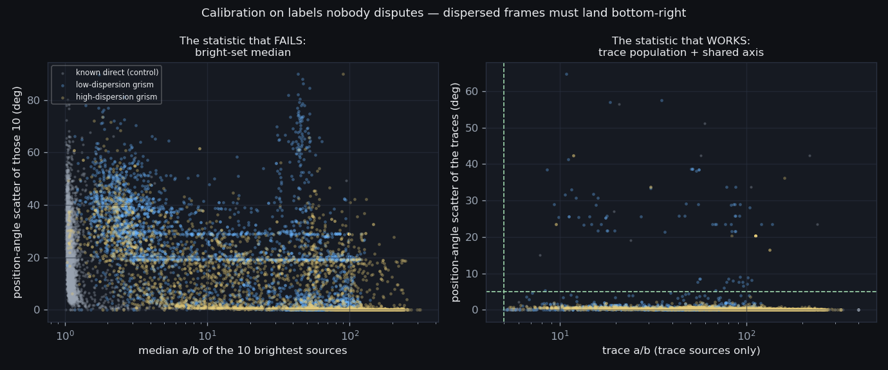

S2c — Filter Identity, Measured
27,536 frames measured from their pixels · 20,130 dispersed · 2 unreadable · built 2026-08-18T19:06Z (S2c v1.0 (2026-08-18)) · the front page
1 · Calibration: can the pixels tell a spectrum from an image?
Question
The FILTER card names the RLMT's grism slots three different
ways across three years, and the earliest name — the bare slot number
6 — is contested: one review panel read it as a grism,
another as a luminance filter. Before that argument can be settled we need a
measurement that does not consult the label at all. So: is dispersion
detectable directly in the pixels, and how cleanly? The only honest way
to answer is to calibrate on the labels nobody disputes —
hrg, lrg, HaGrism,
OGGrism as dispersed; g r i V R I B L as direct
— and report the separation achieved, overlap included.
Evidence
Every frame is background-subtracted and source-extracted, and three things are measured: the elongation of the brightest sources, whether any of them is shaped like a dispersed trace (a/b ≥ 5 and semi-major ≥ 15 px), and whether those traces share a common axis. The shared axis is the decisive test: a grating rules every source in the field the same way, while a cosmic ray or a satellite points wherever it likes.
{kind=link}

| label | truth | measured | dispersed | direct | indeterminate | agreement |
|---|---|---|---|---|---|---|
hrg | dispersed | 9,926 | 9,362 | 84 | 480 | 94.3% |
lrg | dispersed | 6,656 | 6,075 | 74 | 507 | 91.3% |
HaGrism | dispersed | 1,411 | 1,346 | 20 | 45 | 95.4% |
OGGrism | dispersed | 1,428 | 1,343 | 10 | 75 | 94.0% |
HaG | dispersed | 192 | 185 | 0 | 7 | 96.4% |
g | direct | 400 | 1 | 375 | 24 | 93.8% |
r | direct | 400 | 3 | 375 | 22 | 93.8% |
i | direct | 400 | 5 | 388 | 7 | 97.0% |
V | direct | 400 | 0 | 391 | 9 | 97.8% |
R | direct | 400 | 3 | 380 | 17 | 95.0% |
I | direct | 400 | 3 | 368 | 29 | 92.0% |
B | direct | 399 | 1 | 387 | 11 | 97.0% |
L | direct | 400 | 5 | 365 | 30 | 91.2% |
Pooled over the 19,613 known-dispersed frames, the classifier
recovers 93.4% as dispersed. Pooled over the 3,199
known-direct control frames it calls 0.7% dispersed — that is
the false-positive rate, and it is the number that decides whether any
verdict on slot 6 can be believed.
An out-of-sample check, because the number above is fitted. Three
of this classifier's constants were moved in response to specific control
frames — the PA-scatter gate went from 20 deg to 5 after a
defocused r frame, the sparsity gate was invented after an
L frame of M57, and the calibration-frame exclusion was added
after eleven B frames — and every one of those frames is
still scored in the 3,199 control totals. A rate fitted on the data it
is quoted over is a lower bound, not an estimate, and an earlier version of
this page presented it as the latter.
So a second control was drawn: 2,215 frames from the same undisputed labels, under a different seed (20260819), explicitly excluding every frame already measured, and classified with every threshold frozen. Its false-positive rate is 0.9%, against 0.7% in-sample.
| label | holdout frames | called dispersed | false-positive rate |
|---|---|---|---|
| B | 115 | 1 | 0.9% |
| I | 300 | 0 | 0.0% |
| L | 300 | 10 | 3.3% |
| R | 300 | 2 | 0.7% |
| V | 300 | 3 | 1.0% |
| g | 300 | 0 | 0.0% |
| i | 300 | 2 | 0.7% |
| r | 300 | 1 | 0.3% |
The holdout is modestly worse, and that is the honest and expected result: fitting three constants to individual control frames bought about 0.20 of a percentage point of flattery. It is a small gap because the thresholds were set from single diagnosed frames rather than by sweeping the distribution for a minimum — but it is not zero, and a page that quoted only the in-sample figure would be understating its own error. 0.9% is the rate to cite. It is the only number here that survives the question “how do you know you did not fit this?”
The per-label breakdown also shows where the residual error lives: it is concentrated in the luminance and broad filters, which is consistent with the mechanism named under Consequence below — those are the frames of long, unguided, deep exposures where the mount has the most opportunity to drift.
The overlap, stated plainly: 908 known-dispersed frames
contained no trace-shaped source at all (too short an exposure, too faint a
target, or cloud), and 112 known-direct frames contained at least
one (satellites, cosmic-ray tracks, edge-on galaxies). Those frames are the
irreducible ambiguity in the method, and the classifier is built to return
indeterminate across it rather than to guess.
Decision
Dispersion is measurable per frame, and the classifier is adopted with
four rules. (1) Two or more traces sharing an axis to within
5 deg →
dispersed… (2) …provided that shared
axis is the GRATING's, within
12 deg of PA
0. (3) A single trace of
a/b ≥ 20 on that same axis, in a
sparse field (≤ 60 sources) →
dispersed; this rule carries the bright-standard frames where
the target is the only thing in the field. (4) No traces, round
bright sources, and at least 3 of them →
direct. Everything else is indeterminate and is
reported as such.
Rule 2 is the one this campaign was missing, and it is worth stating why it is physics rather than a fitted patch. A diffraction grating is machined glass bolted into a filter wheel: its dispersion direction is fixed in detector coordinates, so it does not merely make parallel traces, it makes traces along one knowable line. The archive's own labelled grism frames pin that line without ambiguity — 18,311 of 18,311 lie within 10 deg of PA 0/180. The tolerance sits in a measured gap rather than at a round number: the furthest on-axis labelled spectrum is at 9.9 deg, the nearest off-axis control false positive at 28.6 deg.
Rule 4's source floor is the mirror image, and it corrects a real
asymmetry. direct is not the absence of a verdict; downstream it
is a certificate that the frame is safe for aperture photometry. Under the
first version of these rules a frame with ONE round detection was certified
on a sample of one, while the dispersed side demanded two corroborating
traces or an extreme trace plus a sparsity check. 681 labelled
grism frames now correctly return indeterminate on fields too
thin to see a spectrum in, instead of voting “clean”.
Consequence
Four false-positive modes were found by measurement. Three were closed; the fourth is real and is quoted above as the residual error rate.
Closed — twilight flats. A flat has no stars, so the
extractor finds dust shadows and detector column defects, which are straight
and mutually parallel because they are columns: a perfect forgery
of a shared dispersion axis. Eleven of the first eighteen B
frames measured came back "dispersed" this way. Calibration frames are now
excluded from the campaign entirely.
Closed — a satellite trail. A 60-second luminance frame of M57 read as dispersed on the strength of one 1,095-px streak, past 1,278 perfectly round stars. A grating disperses everything, so a rich field with exactly one smear is the one thing a grism cannot produce; the solo-trace rule now requires a sparse field.
Closed — detector columns and bleed trails. This was the
largest mode, and an earlier version of this page missed it entirely by
attributing every remaining false positive to the mount. The database says
otherwise: a large block of them sat within a degree of PA 90, exactly
perpendicular to the dispersion axis of every grism frame in the archive.
Nothing on a mount prefers that angle. Detector columns and saturated-star
bleed trails do — they run down the readout direction, and being
literally columns they are more mutually parallel than any real
spectrum, which is precisely why a parallelism-only rule believed them. The
grating-axis gate (rule 2) removes 16 control false
positives and 33 slot-6 verdicts, at a
cost of 1 frames across the whole labelled grism
population.
Open — tracking failures on the grating axis. The remaining 21 false positives are dominated by frames where the mount slipped and the drift happened to run along the dispersion axis. Trailed stars are long, thin and mutually parallel, which is not merely similar to dispersion — it is geometrically the same thing, and no morphological gate in this module can separate them. They arrive in clusters, whole nights of one target at a time, which is the fingerprint of a mount problem rather than of anything optical:
| target | night | false positives |
|---|---|---|
| YZ Cnc | 2024-05-02 | 4 |
| 1976 YX | 2023-11-14 | 2 |
The residue is not purely mount slips, and the page should not claim it
is. At least one survivor is a bleed trail that happens to run
horizontally: a 5-second r exposure of the bright star
HIP 97675 carrying a 1,365-px streak at PA 0.0007 deg, in a
field of 48 stars whose median a/b is 1.12. A 5-second exposure cannot trail
1,365 px, and stars that round rule out drift; the frame is saturated
(65,534 ADU) and the streak is its bleed. That the bleed runs along
rows on this sensor rather than down columns is why the axis gate cannot
catch it.
That case suggests a further discriminator, and it is recorded here without being adopted. A grating has no reason to align with the pixel grid; a bleed trail does so by construction. Measured: requiring the trace axis to differ from exact alignment by more than 0.01 deg would remove 2 of the surviving control false positives at a cost of 4 frames in 18,311 labelled spectra. The ratio is favourable and the mechanism is real — but it would be calibrated on two examples, which is exactly the sin this campaign has already been caught committing elsewhere. It waits for a population, not an anecdote.
One discriminator was proposed and measured to fail, which is
worth recording so it is not proposed again. A grism disperses bright and
faint sources differently — only the bright ones spread far enough to
be detected as traces, so the frame's median elongation stays low
while its trace elongation is high — whereas trailing smears
everything equally. The ratio of the two should therefore separate them, and
on slot 6 it does beautifully (median 6.61).
But on the labelled grism population it does not: those frames are mostly
isolated bright standards with nothing faint to stay round, and they measure
a median ratio of 1.33 against the trailed frames'
1.16 — indistinguishable, with
56% and 72% respectively falling below 1.5.
Restricting to rich fields does not help. Adopting it as a gate would buy a
~1% reduction in false positives at the cost of rejecting most real
spectra.
A second gate was proposed on good reasoning and also measured to fail. The sparse-field requirement currently guards only the solo-trace branch; the argument for extending it to the multi-trace branch is that a grating streaks every bright source, so a rich field in which only two of ten sources are traces is weak evidence. Expressed as a floor on that fraction, every candidate value costs far more real spectra than it buys:
| trace-fraction floor | labelled spectra lost | control false positives removed |
|---|---|---|
| 0.2 | 0 | 0 |
| 0.3 | 148 | 6 |
| 0.4 | 372 | 7 |
| 0.5 | 637 | 7 |
The reason is the same one that sank the previous discriminator: a mount slip streaks all ten sources too, so the frames a floor removes most eagerly are genuine spectra of crowded fields, while the trailed frames sail over it with a fraction of 1.0. The multi-trace branch is left ungated, and the population it carries is reported rather than hidden.
The measurement that would close this gap is the per-source correlation between flux and trace length: under dispersion the two are strongly coupled, under trailing they are independent. That needs the per-source arrays this campaign summarises away rather than stores, so it belongs to a future pass. Until then, 0.7% of direct frames are expected to be misread as dispersed, and any downstream use should treat a lone dispersed verdict on an otherwise photometric night as a tracking failure rather than a discovery.
2 · The second axis: which grism was in the beam?
Question
Two dispersers flew: a high-dispersion H-alpha unit and a low-dispersion
broad-spectrum one. Under the modern vocabulary the card distinguishes them
(hrg vs lrg), but under slot 6 it does
not — and a spectrum is useless if you do not know its dispersion. So:
can the pixels say which unit was in the beam?
Evidence
The obvious statistic is aspect ratio, and it does not work: across the full labelled populations the two units measure a/b of 96 (high) against 82 (low). The reason is that a/b divides by the minor axis, which is the seeing width, so every wobble in focus or atmosphere feeds straight into the statistic.
Trace length is better. Expressed as a fraction of frame width — which normalises the archive's three cameras and two binnings onto one scale — the medians differ by a factor of 1.52. That is the right sign and the right order — the H-alpha unit does disperse further — but it is short of the factor of two the optics predict, and the shortfall is itself a clue: what is measured is not the spectrum's true length but the part of it that clears the detection threshold. The medians are not the story anyway; the tails are.
| grism unit | frames | median a/b | median length/width | 10–90 percentile |
|---|---|---|---|---|
H-alpha grism (hrg, HaGrism) | 10,893 | 96 | 0.105 | 0.011 – 0.201 |
broad grism (lrg, OGGrism) | 7,418 | 82 | 0.069 | 0.023 – 0.115 |

Asking the question a classifier actually has to answer — given a threshold, how PURE is the resulting call? — exposes a sharp asymmetry:
| length/width cut | purity of a “high” call above it | recall | purity of a “low” call below it | recall |
|---|---|---|---|---|
| 0.04 | 54.9% | 69.3% | 26.7% | 16.5% |
| 0.06 | 59.6% | 64.5% | 40.7% | 35.7% |
| 0.08 | 68.7% | 60.3% | 50.6% | 59.7% |
| 0.11 | 79.7% | 46.8% | 51.3% | 82.5% |
| 0.13 | 99.7% | 40.0% | 53.1% | 99.8% |
| 0.15 | 100.0% | 33.0% | 50.4% | 100.0% |
| 0.17 | 100.0% | 27.2% | 48.3% | 100.0% |
A long trace is decisive: past 0.15 essentially nothing but the H-alpha unit produces it — 100.0% pure, at 33.0% recall. A short trace is worthless: across every threshold tried, the purity of a “low” call peaks at 53.1% against a base rate of 40.5%. The cause is visible directly in the data — among H-alpha frames alone, trace length falls steadily as exposure time rises, because long exposures are what FAINT targets get, and a faint trace drops below the detection threshold sooner:
| exposure | H-alpha frames | median length/width |
|---|---|---|
| < 5 s | 1,533 | 0.187 |
| 5 – 20 s | 1,355 | 0.165 |
| 20 – 60 s | 1,700 | 0.098 |
| > 60 s | 6,305 | 0.094 |
Decision
The two grisms do not separate cleanly on real data, and this report
declines to pretend otherwise. A frame is called
high when its trace length fraction reaches
0.15, and ambiguous otherwise.
low is never assigned from morphology — a call
that is right 53% of the time against a 41% base rate
is not knowledge, and recording it as if it were would quietly corrupt every
downstream count of how many H-alpha spectra the archive holds.
Consequence
For frames from the modern naming epochs this costs nothing: their
hrg/lrg cards already name the unit, and this axis
is only a cross-check. The cost falls entirely on the slot-6
era, where the card names nothing — there, roughly half the spectra
can be assigned to the H-alpha unit and the rest must be carried as
“dispersed, unit unknown” until someone measures them properly.
Two measurements would close the gap, and neither is available from what this campaign stores. The first is trace length at a FIXED surface-brightness threshold rather than at a fixed multiple of the sky noise, which removes the brightness confound by construction. The second, and better, is spectral rather than morphological: cross-correlate the extracted trace profile against the two units' response shapes, which the H-alpha grism's isolated emission peak makes trivially separable. Both need the per-source and per-column arrays this campaign summarises away rather than retains, so both belong to the grism extraction track.
3 · Slot 6: the
committee's open conflict, settled
Question
One panel called slot 6 a grism; another called it
luminance. Both were reading the same header card, so at most one of them
could be right — unless the slot is genuinely mixed, in which case
neither is. What fraction of slot-6 frames are actually
dispersed, and does the answer depend on when or on what was observed?
Evidence
2,208 slot-6 frames were measured.
1,706 (77.3%) are dispersed,
101 (4.6%) are direct images,
and 401 are indeterminate. Neither panel was right, because
the slot is not one thing.

Split by target, the pattern is unmistakable — the verdict tracks what was being observed, not when:
| target | frames | dispersed | direct | indet. | nights | verdict |
|---|---|---|---|---|---|---|
| SN2024gy | 158 | 85 | 9 | 64 | 2024-01-25 → 2024-02-23 | MIXED |
| NGC 5548 | 143 | 91 | 17 | 35 | 2023-03-23 → 2023-04-25 | MIXED |
| HD9167 | 97 | 95 | 0 | 2 | 2023-02-09 → 2023-12-13 | SPECTRA |
| SAO12096 | 90 | 90 | 0 | 0 | 2023-02-09 → 2023-12-13 | SPECTRA |
| 2023ixf | 83 | 61 | 3 | 19 | 2023-05-21 → 2023-06-23 | MIXED |
| HD44811 | 82 | 80 | 1 | 1 | 2023-02-09 → 2023-12-13 | SPECTRA |
| SAO12149 | 75 | 75 | 0 | 0 | 2023-02-09 → 2023-03-04 | SPECTRA |
| HD242908 | 75 | 73 | 0 | 2 | 2023-02-09 → 2023-12-13 | SPECTRA |
| NGC 5394 | 74 | 48 | 0 | 26 | 2023-04-06 → 2023-04-25 | MIXED |
| HD35619 | 61 | 59 | 1 | 1 | 2023-02-09 → 2023-12-13 | SPECTRA |
| NGC 4725 | 59 | 34 | 0 | 25 | 2023-03-23 → 2023-04-25 | MIXED |
| UX Arietis | 55 | 53 | 0 | 2 | 2024-01-30 → 2024-03-10 | SPECTRA |
| NGC 4670 | 54 | 44 | 0 | 10 | 2023-04-17 → 2023-04-25 | SPECTRA |
| HD5394 | 54 | 50 | 0 | 4 | 2023-02-10 → 2023-03-04 | SPECTRA |
| M33 | 38 | 0 | 13 | 25 | 2023-12-02 → 2023-12-04 | MIXED |
| SN2024any | 34 | 27 | 0 | 7 | 2024-02-12 → 2024-02-23 | MIXED |
| FEIGE41 | 34 | 8 | 8 | 18 | 2023-02-16 → 2024-03-21 | MIXED |
| Ton599 | 33 | 18 | 11 | 4 | 2024-02-29 → 2024-03-05 | MIXED |
| HR 3454 | 32 | 14 | 0 | 18 | 2023-03-13 → 2023-03-28 | MIXED |
| (untargeted) | 31 | 11 | 1 | 19 | 2023-02-06 → 2024-03-13 | MIXED |
| NGC 4151 | 30 | 14 | 0 | 16 | 2023-03-13 → 2023-04-17 | MIXED |
| NGC 4593 | 29 | 12 | 0 | 17 | 2023-03-09 → 2023-04-18 | MIXED |
| 17 Leporis | 26 | 26 | 0 | 0 | 2023-02-09 → 2023-02-09 | SPECTRA |
| Betelgeuse | 22 | 22 | 0 | 0 | 2023-12-02 → 2023-12-02 | SPECTRA |
| T UMI | 21 | 18 | 2 | 1 | 2023-04-20 → 2023-07-05 | SPECTRA |
Month by month, for the record. There is no step: slot 6 is
used both ways throughout its life, so no changeover date exists and
no date-based rule can rescue the label.
| month | frames | dispersed | direct | indet. | % dispersed | % of decided |
|---|---|---|---|---|---|---|
| 2023-02 | 594 | 548 | 10 | 36 | 92.3% | 98.2% |
| 2023-03 | 320 | 208 | 0 | 112 | 65.0% | 100.0% |
| 2023-04 | 268 | 183 | 24 | 61 | 68.3% | 88.4% |
| 2023-05 | 109 | 97 | 3 | 9 | 89.0% | 97.0% |
| 2023-06 | 54 | 30 | 7 | 17 | 55.6% | 81.1% |
| 2023-07 | 1 | 1 | 0 | 0 | 100.0% | 100.0% |
| 2023-10 | 112 | 98 | 8 | 6 | 87.5% | 92.5% |
| 2023-11 | 131 | 101 | 2 | 28 | 77.1% | 98.1% |
| 2023-12 | 165 | 125 | 13 | 27 | 75.8% | 90.6% |
| 2024-01 | 115 | 57 | 7 | 51 | 49.6% | 89.1% |
| 2024-02 | 184 | 157 | 2 | 25 | 85.3% | 98.7% |
| 2024-03 | 155 | 101 | 25 | 29 | 65.2% | 80.2% |
The same test applied to W — which turns out to be a
second mislabelled slot, and a different kind of one
The W slot was not part of the original dispute, but it is
the other filter whose name says nothing about its optics, so it was
measured on the same footing. Of 298 frames,
72 are dispersed and 157 are direct
— and unlike slot 6, the split is almost perfectly
datable:
| month | frames | dispersed | direct | indet. | % dispersed | % of decided |
|---|---|---|---|---|---|---|
| 2023-03 | 7 | 0 | 6 | 1 | 0.0% | 0.0% |
| 2023-05 | 43 | 0 | 37 | 6 | 0.0% | 0.0% |
| 2023-06 | 4 | 0 | 3 | 1 | 0.0% | 0.0% |
| 2023-10 | 25 | 0 | 24 | 1 | 0.0% | 0.0% |
| 2023-12 | 66 | 0 | 64 | 2 | 0.0% | 0.0% |
| 2024-01 | 1 | 0 | 1 | 0 | 0.0% | 0.0% |
| 2024-02 | 66 | 31 | 1 | 34 | 47.0% | 96.9% |
| 2024-03 | 86 | 41 | 21 | 24 | 47.7% | 66.1% |
W is a direct filter through 2024-01 and a grism from
2024-02 onward. The two disputed slots therefore fail in opposite
ways: slot 6 is mixed by target with no usable date
rule, while W is mixed by date with a clean boundary.
Neither can be resolved by the kind of rule — "frames after date X are
spectra", "slot 6 means grism" — that a label-based audit would
naturally reach for.
Decision
Slot 6 is not a filter identity at all — it is
a wheel position that carried a grism for some programmes and a clear or
broadband element for others, within the same observing season. The label
must therefore never be used to decide whether a frame is a spectrum, and
neither may W. Every downstream consumer reads the per-frame
verdict in frame_dispersion instead.
Consequence
Both review panels were reasoning correctly from insufficient evidence, which is why the conflict never resolved on argument: each had sampled a different corner of the slot. The disagreement was a fact about the archive, not about the reviewers, and no amount of further discussion of the header could have settled it. This is the general lesson for the manifest — where a header card encodes an instrument configuration rather than an instrument property, the card is a hypothesis and the pixels are the evidence.
4 · Two projects that were about to analyse the wrong pixels
Question
Two live projects depend on slot 6 in opposite directions.
The Dwarf/AGN survey is building an AGN light curve for NGC 5548
from those frames, which requires them to be photometry. The SN 2023ixf
programme holds 83 slot-6 frames that it hoped were a
flash-phase spectral series, which requires them to be spectra. Both cannot
be safely assumed. Which is which?
Evidence
NGC 5548 — 143 slot-6 frames
measured across 2023-03-23 → 2023-04-25:
91 dispersed (63.6%),
17 direct, 35 indeterminate.
| night | frames | dispersed | direct | indet. | reading |
|---|---|---|---|---|---|
| 2023-03-23 | 8 | 0 | 0 | 8 | no verdict |
| 2023-03-24 | 7 | 0 | 0 | 7 | no verdict |
| 2023-03-25 | 10 | 0 | 0 | 10 | no verdict |
| 2023-03-27 | 10 | 10 | 0 | 0 | spectra |
| 2023-03-28 | 10 | 10 | 0 | 0 | spectra |
| 2023-03-29 | 10 | 10 | 0 | 0 | spectra |
| 2023-03-31 | 9 | 9 | 0 | 0 | spectra |
| 2023-04-01 | 10 | 10 | 0 | 0 | spectra |
| 2023-04-02 | 10 | 10 | 0 | 0 | spectra |
| 2023-04-05 | 10 | 0 | 6 | 4 | images |
| 2023-04-17 | 7 | 2 | 0 | 5 | spectra |
| 2023-04-18 | 5 | 5 | 0 | 0 | spectra |
| 2023-04-19 | 10 | 0 | 9 | 1 | images |
| 2023-04-22 | 9 | 7 | 2 | 0 | spectra |
| 2023-04-23 | 8 | 8 | 0 | 0 | spectra |
| 2023-04-25 | 10 | 10 | 0 | 0 | spectra |
The campaign alternates: whole nights of spectroscopy (2023-03-27 → 04-02, 04-23, 04-25) interleaved with nights of imaging (04-05, 04-19). Only 17 of the 143 frames are usable photometry.
SN 2023ixf — 83 slot-6 frames
measured across 2023-05-21 → 2023-06-23:
61 dispersed (73.5%),
3 direct, 19 indeterminate, spread over
13 separate nights. None of them reaches the trace length that
would identify the H-alpha unit (0 of 61).
That is not evidence the series is broad-spectrum: section 2
shows a short trace is worthless as a discriminator, because the H-alpha unit
makes short traces too whenever its target is faint — and a supernova
weeks past discovery is exactly a faint target. An earlier version of this
page read the absence of long traces as “all broad-spectrum grism”
and that claim is withdrawn. The series must be reduced with its dispersion
treated as a free parameter solved from the frames themselves.
| night | frames | dispersed | direct | indet. | reading |
|---|---|---|---|---|---|
| 2023-05-21 | 4 | 4 | 0 | 0 | spectra |
| 2023-05-23 | 9 | 7 | 0 | 2 | spectra |
| 2023-05-24 | 4 | 4 | 0 | 0 | spectra |
| 2023-05-26 | 7 | 3 | 3 | 1 | split |
| 2023-05-27 | 8 | 8 | 0 | 0 | spectra |
| 2023-05-28 | 8 | 7 | 0 | 1 | spectra |
| 2023-05-29 | 8 | 8 | 0 | 0 | spectra |
| 2023-05-31 | 7 | 7 | 0 | 0 | spectra |
| 2023-06-01 | 7 | 3 | 0 | 4 | spectra |
| 2023-06-03 | 7 | 0 | 0 | 7 | no verdict |
| 2023-06-04 | 3 | 0 | 0 | 3 | no verdict |
| 2023-06-10 | 1 | 1 | 0 | 0 | spectra |
| 2023-06-11 | 1 | 1 | 0 | 0 | spectra |
| 2023-06-13 | 6 | 5 | 0 | 1 | spectra |
| 2023-06-23 | 3 | 3 | 0 | 0 | spectra |
Decision
The NGC 5548 AGN light curve does not survive as photometry.
63.6% of its slot-6 frames are spectra, and
only 17 frames across the whole 2023 campaign are direct
images — too few, and too unevenly spaced, to carry a variability
result. The Dwarf/AGN survey should rebuild that light curve from its other
filters and treat the slot-6 frames as a spectroscopic dataset
it did not know it had.
The SN 2023ixf frames are a genuine spectral series. 61 dispersed frames on 13 nights, opening 2023-05-21 — two days after the 2023-05-19 discovery, inside the flash-ionisation window — and running to 2023-06-23. No frame in the series reaches the H-alpha unit's signature trace length, so it is plausibly homogeneous in dispersion; section 2 explains why that cannot be asserted outright.
Both answers must be applied at frame granularity rather than as a
blanket ruling per target: a night-by-night split is exactly what a mixed
wheel position produces. Any frame marked indeterminate stays
out of both the light curve and the spectral series until a human has looked
at it.
Consequence
A dispersed frame fed to aperture photometry does not fail loudly. It returns a number — a smaller number, because the target's flux has been spread along a trace and most of it now falls outside the aperture — and that number lands in the light curve as a fake dimming, correlated with whichever nights the grism happened to be in the beam. That is the failure mode this measurement exists to prevent, and it is invisible to every check that does not look at the pixels. For NGC 5548 the correlation would have been particularly convincing: the dispersed and direct nights come in runs of several days, so the artefact would have looked like real AGN variability on exactly the timescale the survey was hunting.
The SN 2023ixf result runs the other way and is worth stating as a gain rather than a correction. A flash-phase spectral series of a Type II supernova in M101 is a scarce object; this one was sitting in the archive labelled with a slot number, uncounted, because nobody could prove what the label meant.
5 · How many spectra does the archive actually hold?
Question
Two figures circulate in the project write-ups: the T CrB series is quoted as 247 Mode0 spectra, and the BeStar campaign as ~23,000 grism frames. Both were counted from header labels. Do they survive measurement?
Evidence
Across every candidate and control frame measured, 20,130 frames are dispersed. Of those, 3,621 carry a trace long enough to identify the H-alpha unit; for the remaining 16,509 the unit cannot be named from morphology (section 2), which is a limit on the instrument attribution, not on the spectrum count.
| label | in archive | measured | coverage | dispersed | % of measured | date span |
|---|---|---|---|---|---|---|
hrg | 9,926 | 9,926 | 100.0% | 9,362 | 94.3% | 2024-11-08 → 2026-07-02 |
lrg | 6,656 | 6,656 | 100.0% | 6,075 | 91.3% | 2024-11-08 → 2026-07-02 |
6 | 2,208 | 2,208 | 100.0% | 1,706 | 77.3% | 2023-02-06 → 2024-03-26 |
OGGrism | 1,428 | 1,428 | 100.0% | 1,343 | 94.0% | 2024-04-04 → 2025-01-20 |
HaGrism | 1,411 | 1,411 | 100.0% | 1,346 | 95.4% | 2024-05-07 → 2025-03-20 |
W | 299 | 298 | 99.7% | 72 | 24.2% | 2023-03-27 → 2024-03-25 |
HaG | 192 | 192 | 100.0% | 185 | 96.4% | 2024-04-04 → 2024-04-16 |
w | 2 | 2 | 100.0% | 0 | 0.0% | 2026-03-21 → 2026-03-21 |
lrgblue | 1 | 1 | 100.0% | 1 | 100.0% | 2026-03-21 → 2026-03-21 |
Coverage is complete: every queued frame has been measured, so the counts in this section are totals rather than floors. The 2 frame(s) marked amber could not be opened at all — a truncated file, not an ambiguous one — and are excluded from every percentage on this page.

T CrB — the quoted 247 checks out, as a label count. The
archive holds exactly 247 canonical science
T CrB frames carrying a grism card, so that figure was derived correctly
from the headers. (The raw frames table lists
483 such rows; the difference is duplicate copies of the same
exposures, which is why the qualifier matters.) What the
measurement adds is that it can now be audited frame by frame instead of
taken on trust. Of the 718 T CrB monitoring frames this
campaign queued, 718 are measured and 581
of those are dispersed (212 long enough to identify as
H-alpha) — so the series is substantially larger than 247 once frames
that are spectra without a grism card are counted too.
BeStar campaign — the quoted ~23,000 does not. The staged
BeStar campaign contains 4,869 frames in total, not
23,000 — a real and well-populated campaign, but roughly a fifth of the
quoted size. Of those, 3,886 carried a grism-family
FILTER card and so entered this campaign's queue;
3,886 are measured and 3,554 of those are
dispersed. The gap between 4,869 and 3,886 is
itself worth noting: those frames are staged as BeStar work but carry no
grism label at all, so a label-only audit would not have found them.
The ~23,000 figure is instead close to
22,123 — every frame in the archive whose filter is
a grism name or a disputed slot, across all projects, of which
19,613 carry an unambiguous grism card. It is an archive-wide
instrument total that appears to have been attached to a single campaign.
Decision
The census above replaces both quoted figures as the citable numbers, and they should be cited with their basis attached — "frames measured as dispersed", not "frames labelled grism". Where a project's own staged frame list disagrees with a headline count, the staged list is the narrower and more defensible number.
Consequence
The gap between a label count and a measured count is not noise; it is
made of the specific frames a label-based count gets wrong in both
directions — grism-labelled frames that are too shallow to have
recorded a usable trace, and slot-6 frames that are spectra
nobody had counted. Any paper quoting a spectrum count from this archive
should quote the measured one, and any paper quoting the label count should
expect a referee to ask which frames were actually looked at.